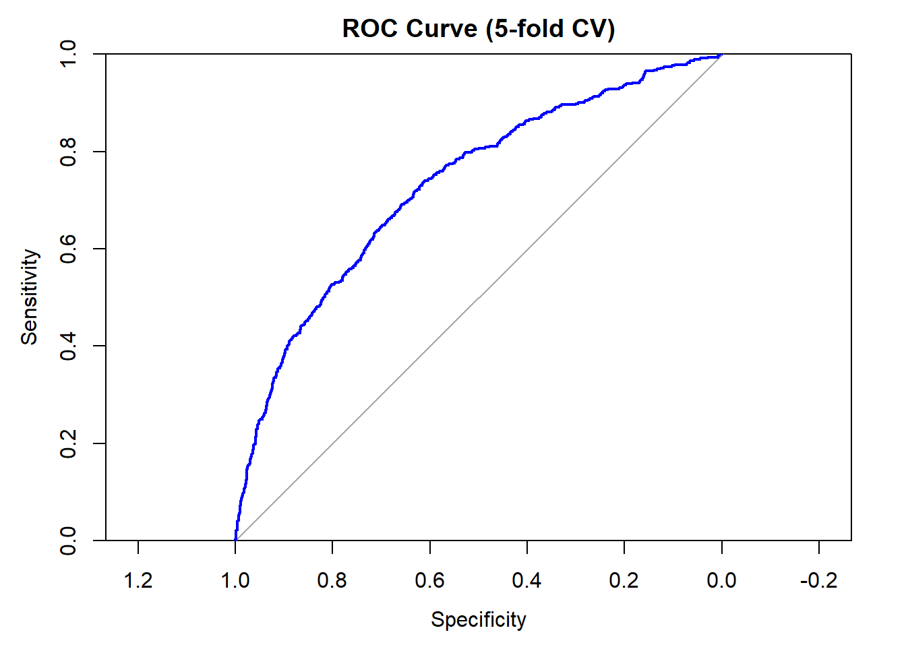
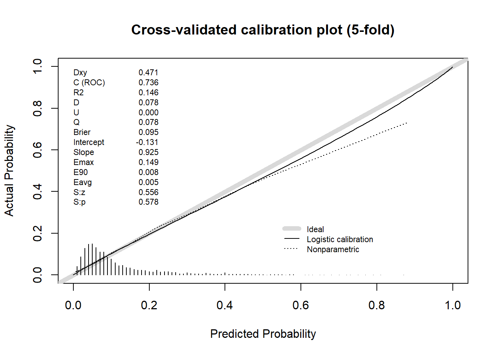

## 5. Split + fit (same model as 1c)set.seed(2026)smart_split <-initial_split(smart1, prop =0.75, strata = EVENT)train_data <-training(smart_split)test_data <-testing(smart_split)fit <-glm(EVENT ~ AGE + SEX + BMI + SYSTH + HDL + DIABETES + HISTCAR2 + HOMOC +log(CREAT) + STENOSIS + IMT + SMOKING + alcohol + albumin,data = train_data, family = binomial)
Logistic Regression Model
model <-glm(EVENT ~ AGE + SEX + BMI + SYSTH + HDL + DIABETES + HISTCAR2 + HOMOC +log(CREAT) + STENOSIS + IMT + SMOKING + alcohol + albumin,data = smart1, family = binomial)
Question A
The performance of the logistic regression model is evaluated using 5-folds cross validation (n = 3873). At the default probability threshold of 0.5, the mean sensitivity was 0.05 (SD = 0.02) and the mean specificity was 0.99 (SD = 0.005). The mean positive predictive value is 0.45, meaning that 45% of positive predictions were correct. The mean negative predictive value is 0.89, meaning that 89% of negative predictions were correct. However, the PPV and NPV are strongly influenced by the prevalence in this cohort (approximately 12%), a higher prevalence would expected to yield a higher PPV and a lower NPV even with the same underlying model performance.
The mean area under the ROC curve across the folds was 0.73 (SD = 0.03), and the AUC of the ROC based on the pooled cross-validated predictions was 0.73, see Figure. This means that a randomly chosen patient with an event receives a higher predicted probability than a randomly chosen patient without an event in about 73% of cases. This is better than the random classifier (AUC = 0.5), but far from perfect discrimination (AUC = 1). Furthermore, the ROC curve shows how sensitivity and specificity trade off as the threshold varies. For example, for a sensitivity of roughly 0.8, a specificity of roughly 0.5 should be accepted.
# same proportion in every fold, check if that is correct# way of validating the final model of part 1 with no external data availablelibrary(caret)library(pROC)set.seed(1234)folds <-createFolds(smart1$EVENT, k =5, returnTrain =TRUE) # ensures by default that EVENT proportions are equal print(str(folds))
# Extract the saved CV predictionscv_preds <- model_glm$pred# Confusion matrix at 0.5, using the labels caret storedconfusionMatrix(cv_preds$pred, cv_preds$obs, positive ="yes") # sensitivity for events
Confusion Matrix and Statistics
Reference
Prediction no yes
no 3383 435
yes 30 25
Accuracy : 0.8799
95% CI : (0.8693, 0.89)
No Information Rate : 0.8812
P-Value [Acc > NIR] : 0.6099
Kappa : 0.0736
Mcnemar's Test P-Value : <2e-16
Sensitivity : 0.054348
Specificity : 0.991210
Pos Pred Value : 0.454545
Neg Pred Value : 0.886066
Prevalence : 0.118771
Detection Rate : 0.006455
Detection Prevalence : 0.014201
Balanced Accuracy : 0.522779
'Positive' Class : yes
# Build ROC object (probability of "yes" vs actual class)roc_obj <-roc(response = cv_preds$obs, predictor = cv_preds$yes,levels =c("no", "yes"))# Plotplot(roc_obj, main ="ROC Curve (5-fold CV)", col ="blue", lwd =2,xlim =c(1, 0),xaxs ="i", yaxs ="i",xlab ="Specificity",ylab ="Sensitivity")

auc(roc_obj)
Area under the curve: 0.7309
Question B
# Calibration # Predicted P(EVENT = "yes") on the test set + observed classtestProbs <-tibble(.pred_yes =predict(fit, newdata = test_data, type ="response"),Class = test_data$EVENT)# Calibration plot on the test data (caret, slide 31)cal_obj <- caret::calibration(Class ~ .pred_yes, data = testProbs,class ="yes", cuts =10)ggplot(cal_obj) +labs(title ="Calibration plot – test data",x ="Bin midpoint (predicted probability)",y ="Observed event percentage")
The calibration of the logistic regression model is evaluated using two calibration plots. First, the model is fitted on the training data (75%) and the predicted probabilities are calculated for the test data (25%). The test patients are divided into 10 bins based on their predicted risk, and for each bin the observed event percentage is plotted with a 95% confidence interval (see Figure). If the model is well calibrated, the points lie on the diagonal. In the first two bins (0–10% and 10–20%), which contain most of the patients, the observed event percentages are about 7% and 11%. These are close to the diagonal with narrow confidence intervals, meaning that for low-risk patients the predicted risks agree with the observed event rates. The bins at 25% and 35% are also close to the diagonal. At 45% and 55% the observed percentages (28% and 40%) are lower than predicted, but the confidence intervals are wide and still include the diagonal. Above 60% the bins contain only one or two patients (confidence intervals from 0 to 97.5%), and the 95% bin is empty, which our caret shows as 0%. These bins give no information about the calibration of the model. However, because the test set is small, the calibration for high-risk patients cannot be judged from this plot.Therefore, we also evaluate using 5-fold cross-validation on the full data set (n = 3873), in the same way as in question A
# Cross-validated calibration with intercept & slopeform <- EVENT ~ AGE + SEX + BMI + SYSTH + HDL + DIABETES + HISTCAR2 + HOMOC +log(CREAT) + STENOSIS + IMT + SMOKING + alcohol + albuminset.seed(2026)K <-5folds <-sample(rep(1:K, length.out =nrow(smart1)))cvprob <-rep(NA_real_, nrow(smart1))for (k in1:K) { m <-glm(form, data = smart1[folds != k, ], family = binomial) cvprob[folds == k] <-predict(m, newdata = smart1[folds == k, ], type ="response")}# val.prob() needs the outcome as 0/1: factor "no"/"yes" -> 1/2 -> 0/1y01 <-as.numeric(smart1$EVENT) -1cal_stats <-val.prob(cvprob, y01) # draws the plot AND returns the statisticstitle("Cross-validated calibration plot (5-fold)")

# Pull out the numbers you report in the text:round(cal_stats[c("Intercept", "Slope", "C (ROC)", "Brier")], 3)
Intercept Slope C (ROC) Brier
-0.131 0.925 0.736 0.095
The calibration slope is 0.925 and the calibration intercept is -0.131. For good calibration the slope should be close to 1 and the intercept close to 0. A slope slightly below 1 means that the predictions are somewhat too extreme, mainly for high predicted risks, which indicates a little overfitting. This can be expected with 14 predictors and no variable selection. The intercept is estimated together with the slope and is therefore hard to interpret on its own. The mean absolute difference between predicted and observed risk (Eavg) is 0.005, meaning that on average the predictions agree with the observed outcomes. The Spiegelhalter test also shows no significant miscalibration (z = 0.556, p = 0.578). Confidence intervals for the intercept and slope were not calculated, but these could be obtained with bootstrap resampling.
The histogram at the bottom of the plot shows that almost all patients have a predicted risk below 0.2, which is in line with the prevalence of around 12%. In this range the nonparametric curve follows the ideal line. Above a predicted risk of about 0.45 the curve falls below the ideal line. For example, for a predicted risk of about 0.85 the observed risk is only about 0.7. The maximum difference between predicted and observed risk (Emax) is 0.149 and lies in this high-risk range. This means that the model overestimates the risk for the small group of high-risk patients, which is in line with the slope below 1. The C-statistic of 0.736 is similar to the AUC from question A (0.73), and the Brier score is 0.095.
In conclusion, the model is well calibrated for the large majority of patients with a predicted risk below 0.2 to 0.3, but overestimates the risk for the few patients with a high predicted risk.